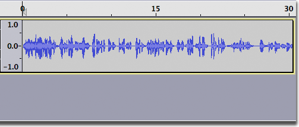
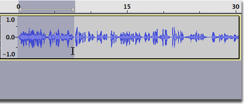
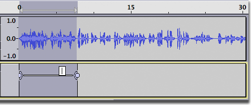
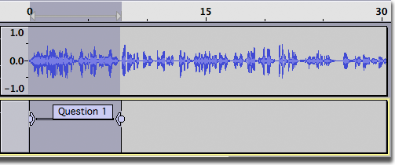
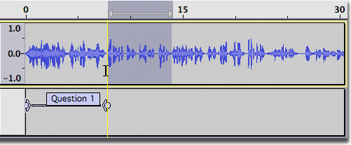
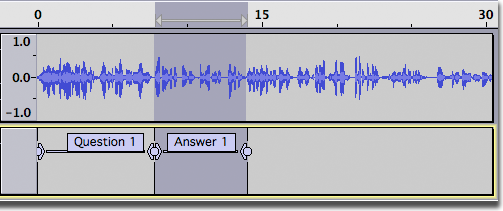
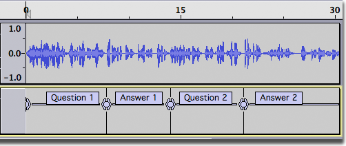
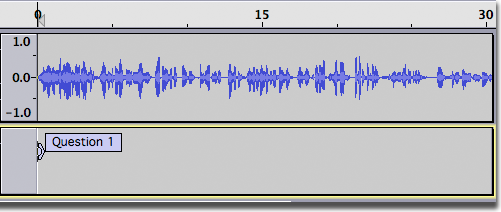
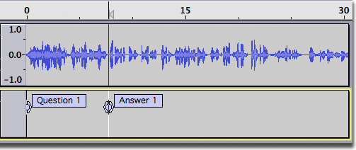
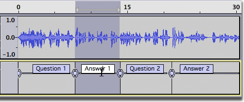

Creating and Selecting Labels
Contents
- Creating Labels
- Alternative Method Using Point Labels
- Adding labels while playing or recording
- Selecting a label
Creating Labels
Suppose that you have a recording of an interview and you want to annotate the questions and answers so you can easily jump directly to a particular question or answer later on. Initially, you may have something like the image below. Without any annotation it's almost impossible to tell them apart just looking at the waveform.
- 
Here, we select the first question with the mouse (below). This may require listening to the audio several times to determine the exact boundaries of the selection.
- 
Now click on , or type its keyboard shortcut ( Ctrl + B. This creates a new label track and a blank label outlining the current selection (below).
- 
The cursor is automatically positioned inside the label, just type the name of the label then press Enter (pressing Enter allows you to use any current keyboard shortcuts normally--you could press Space to listen to the selection again if you wished). In the image below we've typed Question 1.
- 
After this question comes the answer from the person being interviewed. We'll select this one by starting from the right side of the answer and dragging to the left. Note that a vertical yellow guide appears when we get to the edge of the first label, making it easy to line up the two labels (below). It's common for the next label to start exactly where the previous one ends, but it's not necessary.
- 
Once again, click on to create the next label, then type its name and press Enter.
In the following image, we've added even more labels.
- 
And here is a complete label track with several labels
- 
Alternative Method Using Point Labels
In the example above we used region labels to mark the interview segments. We could just as easily have used point labels.
For example, we could click in the audio track at the beginning of the first question then click on to create the point label.
- 
Similarly, we could click in the audio track at the beginning of the first answer then click on to create the second point label.
- 
Either method is equally valid. Region labels have the advantage that clicking in the label text selects the audio spanned by the region label, which may be useful in some situations.
Adding labels while playing or recording
You can also create labels while playing or recording:
- To create a point label at the current Audio Position indicated in Selection Toolbar, choose , or its keyboard shortcut Ctrl + M ( ⌘ + . on Mac ).
- To create a region label while playing or recording, click and drag the region in the audio track then use the command or its shortcut Ctrl + B. Similarly you can click anywhere in a track while playing or recording and use Ctrl + B to label that point.
Selecting a label
When you click inside a label to select it, the label is opened so its text can be edited, and the cursor point or region of audio the label corresponds to is restored. The region will be visible in all audio tracks that are selected and the cursor will be visible in all audio tracks that had the yellow focus border. This applies even if the label track is above the audio track.
- 
You can use Tab on your keyboard to select forwards through each label whenever the focus border is in the label track. To restore focus to the label track if necessary, either use keyboard Up or Down or click in empty space on the Track Control Panel of the label track (which both selects it and gives it focus).
If a label is open for editing, Tab moves to and opens the next label to right. If no label is open, Tab moves to and opens the nearest label to right of the current cursor (or the nearest label to right of the current start of the selection). Shift + Tab similarly selects backwards through each label in the focused label track, opening the next label to left of an open label, otherwise the nearest label to left of the cursor or selection start.
When Tab or Shift + Tab opens the last or first label respectively in the focused label track, the next Tab or Shift + Tab closes that label. You can then use Tab or Shift + Tab again to navigate through the labels starting from the opposite end of the track.